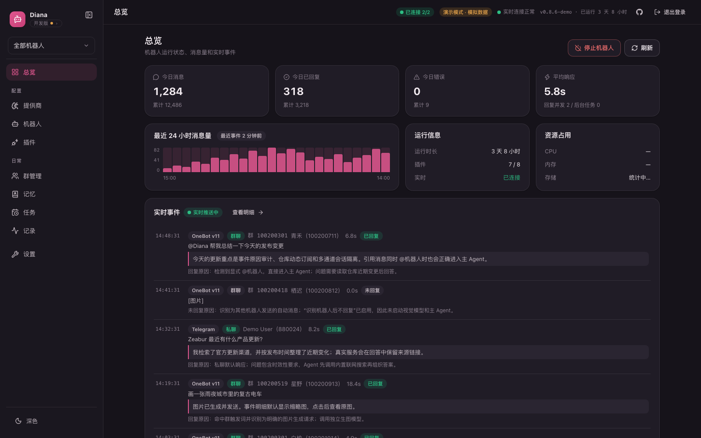

Diana is written in Go and compiles to a single binary. OneBot v11, Telegram, QQ official bots, DingTalk, Feishu and WeCom can all be online at once, with a built-in web console, plugin system and agent. Configuration, memory and logs live in SQLite on your own machine — no hosted service involved.
curl -fsSL https://raw.githubusercontent.com/SuInk/Diana/main/scripts/install.sh | sh
irm https://raw.githubusercontent.com/SuInk/Diana/main/scripts/install.ps1 | iex
docker run -d --name diana -p 18080:18080 -v diana-data:/app/data ghcr.io/suink/diana:latest
Once it finishes, open http://127.0.0.1:18080 to run the first-time setup.

A single compiled binary. Configuration, memory and logs all live in SQLite on your machine; nothing is reported home and no hosted service is required.
All enabled bots run in parallel and replies, images and reminders always return to the channel they came from. Conversation context can be isolated per channel or shared.
Chat, vision, intent detection and image generation each bind to their own provider and model, verified with a real request before the configuration is saved.
No plugin to install. Time-sensitive questions are researched before they are answered — Exa MCP first, Tavily as the fallback.
Vision models and OCR work side by side, so even a chat model without image support still receives the recognised text. Results are keyed by content hash, so the same image is only read once.
Every group gets its own reply window, allow and deny lists, trigger words, persona, member-level threshold and tool permissions.
Recent context, compacted summaries, structured facts and long-history retrieval work in layers to keep token usage in check.
A minimal Pi-style tool loop with file, shell and browser tools, loading skills and MCP servers on demand.
Why each message was answered, which tools ran and how many tokens it cost are all recorded in the event centre; the operation log identifies who did what.
The installer detects your OS and architecture, downloads the latest stable build and verifies it against SHA256SUMS. Upgrades back up your data first and roll back automatically if the health check fails.
# the same command installs and upgrades
curl -fsSL https://raw.githubusercontent.com/SuInk/Diana/main/scripts/install.sh | sh
# the same command installs and upgrades
irm https://raw.githubusercontent.com/SuInk/Diana/main/scripts/install.ps1 | iex
# published image, no need to clone the repo
docker run -d --name diana -p 18080:18080 -v diana-data:/app/data ghcr.io/suink/diana:latest
The generated admin username and password are printed to the terminal and saved to config.yaml in the install directory.
Visit 127.0.0.1:18080 and sign in with the admin account shown in the terminal.
Fill in the credentials for each platform in the web console — all six channels can run at once — and bind a model to each role.
Upgrade from the console, or simply run the install command again; a failed upgrade restores itself.
Works with NapCat and other OneBot implementations, in groups and direct messages, with per-group policy over how it replies.
Official Bot API long polling. Outbound only, so no public address is needed.
QQ Open Platform WebSocket gateway. Outbound connection, no public address needed.
Stream mode over an outbound connection — again no public address and no HTTP callback to configure.
Event subscription callbacks with encrypted delivery and signature checks; needs a publicly reachable callback URL.
Custom-app callbacks verified and decrypted with WXBizMsgCrypt; needs a publicly reachable callback URL.
The first four connect outbound from your machine, so a home or internal network works as-is. Feishu and WeCom can only push events to you, so the console has to be reachable from the internet.